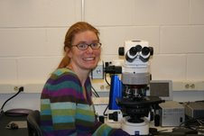
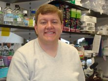

|
Lukasz Kozubowski Postdoctoral Fellow Heitman Lab Department of Molecular Genetics and Microbiology Duke university Medical Center |
 |
John McMillan BASF Plant Science |
|
John Moskow |
|
Rey Sia http://www.brockport.edu/biology/Sia.html Associate Professor State University of New York College at Brockport Department of Biological Sciences |
|
Indrani Bose Assistant Professor |
|  |
Amy Gladfelter http://www.dartmouth.edu/~gladfelterlab/ Assistant Professor, Biology Department Dartmouth College Hanover, NH 03755 office phone: 603-646-8706 lab phone: 603-646-8704 |
 |
Jacob C. Harrison Senior Scientist |
 |
Mignon Keaton Mignon Keaton, Ph.D. Biochemistry and Molecular Genetics University of Virginia, School of Medicine P.O. Box 800733, Jordan Hall 1232 Charlottesville, VA 22908 Tel: (434) 924-2466 |
|  | Aron Marquitz postdoctoral fellow Nancy Raab-Traub laboratory Lineberger Comprehensive Cancer Center University of North Carolina at Chapel Hill Chapel Hill, NC 27599 Tel: (919) 966-7518 |
 |
Jack McNulty |
|
Chandra Theesfeld Post-doctoral fellow Division of Biology
University of California, San Diego |
 |
Javier Irazoqui Charles A. King Trust Research Fellow Ausubel Lab Dept. of Molecular Biology, Massachusetts Gen. Hospital Dept. of Genetics, Harvard Medical School |